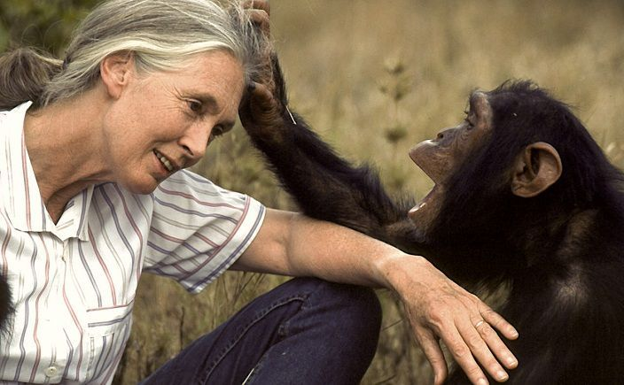

JANE GOODALL
Antropóloga, profesora de universidad, escritora, ambientalista, primatóloga y etóloga.
Mensajera de la paz de las Naciones Unidas.
"De niña, recibí de regalo un chimpancé de peluche al que mi padre nombró Jubilee. Mi cariño por ese juguete fue el inicio de mi amor por los animales."
VIDA PROFERIONAL
Parque Nacional Gombe Stream
Estudios sobre la vida social y familiar de los chimpancés
La investigación en Gombe Stream es reconocida por la comunidad científica al contradecir dos creencias muy arraigadas en aquel entonces: que solamente los humanos podían crear y utilizar herramientas, y que los chimpancés eran vegetarianos.
Nuevo método de identificación de por nombre, no por número. Esto permitió desarrollar una conexión cercana con los chimpancés y convertirme en el único ser humano aceptado en una sociedad de chimpancés, hasta la fecha.
Estudio de conductas cariñosas y pacíficas y observación del lado agresivo de la naturaleza de los chimpancés en Gombe Stream..
Instituto Jane Goodall
Fundadora del Instituto de investigación de primates.
Líder global, en un esfuerzo por proteger a los chimpancés y a sus hábitats.
Programas de conservación y desarrollo en África, innovadores y centrados en la comunidad.
Defensa de los chimpancés y su ambiente hasta la erupción de la pandemia global de Covid 19.
Miembro del consejo del santuario de chimpancés más grande fuera de África.
CONDECORACIONES
1984: Premio J. Paul Getty a la Conservación de Vida Silvestre.
1985: Premio Legado Viviente por la Liga Internacional de Mujeres.
1988: Premio Centenario de la National Geographic Society.
1996: La Medalla de Plata de la Sociedad Zoológica de Londres.
1999: Premio Internacional de la Paz.
2016: Premio Ecovidrio "Personalidad ambiental del año".
2018: Doctora Honoris Causa por la Universidad Complutense de Madrid.
2020: Premio Artemio Precioso otorgado por Greenpeace España por su activismo ambiental.

Just relax
JANE GOODALL
Hampstead, Reino Unido
b.vicariog@alumnos.urjc.es
3 de Abril de 1934
Descarga PDF